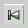

Durch Klick auf die Nihilist-Animation wird das Animationstool Animal gestartet und es zeigt sich das Animationsfenster:
Die Bedienung des Animationsfensters wird im folgenden beschrieben:
 Regelt die Geschwindigkeit der Animation
Regelt die Geschwindigkeit der Animation
 Vergrößert
bzw. verkleinert die Darstellungsgröße
Vergrößert
bzw. verkleinert die Darstellungsgröße
 Zum Anfang der Animation
Zum Anfang der Animation
 Zum vorherigen Schritt
 Animation als inverse Slideshow abspielen
Animation als inverse Slideshow abspielen
 Animationsschritt zurück
Animationsschritt zurück
 Animation anhalten
Animation anhalten
 Ausführen des nächsten Schritts
Ausführen des nächsten Schritts
 Animation als Slideshow anzeigen
Animation als Slideshow anzeigen
 Gehe zum nächsten Schritt
Gehe zum nächsten Schritt
 Zum Ende der Animation
Zum Ende der Animation
 Zum Beenden der Animationen müssen sowohl das Animationsfenster als auch das
Programmfenster von Animal geschlossen werden.
Zum Beenden der Animationen müssen sowohl das Animationsfenster als auch das
Programmfenster von Animal geschlossen werden.